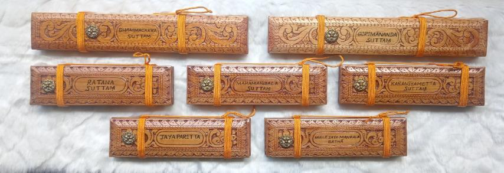
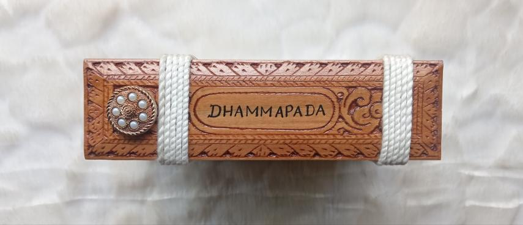
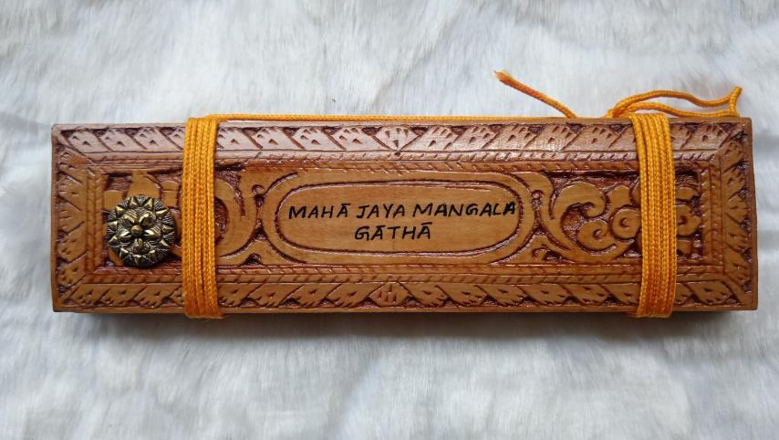
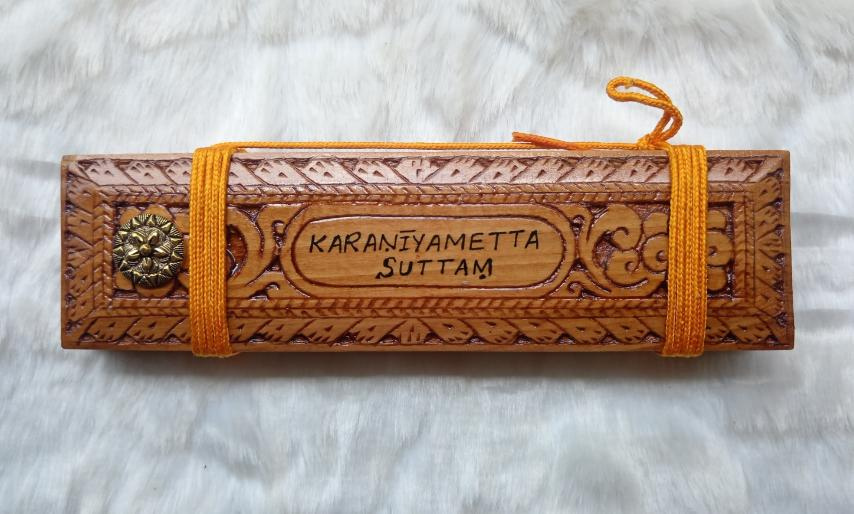
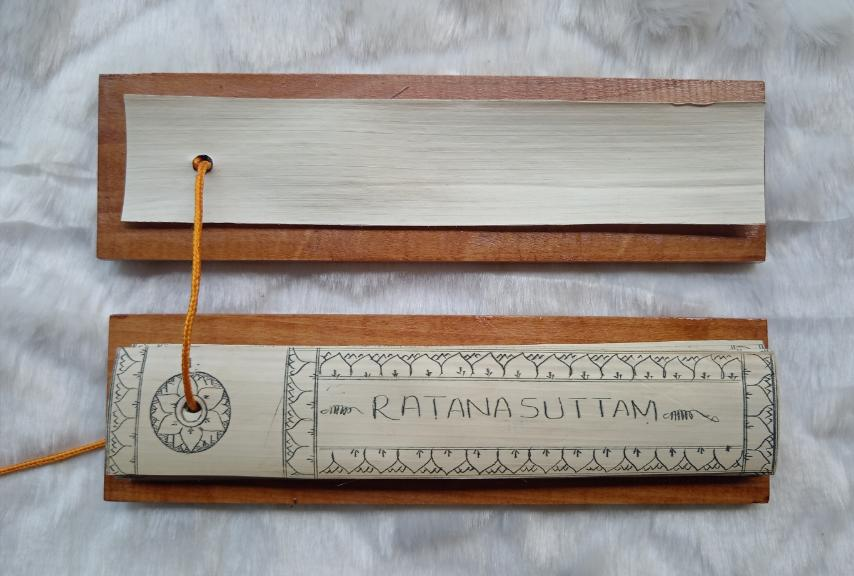
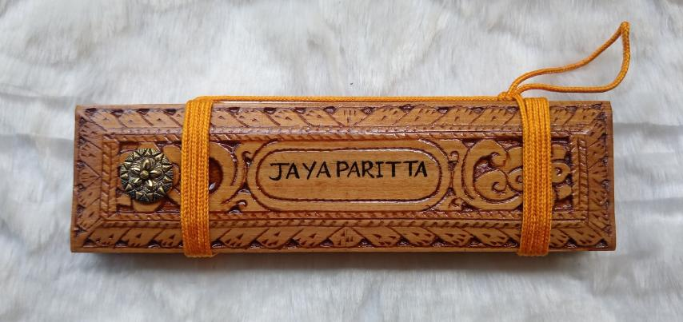
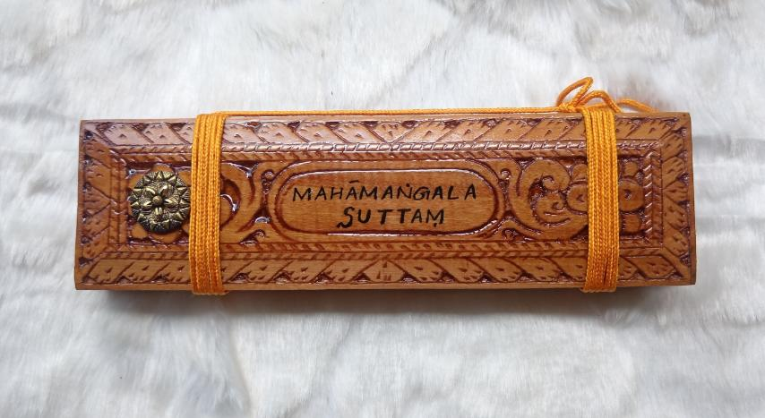
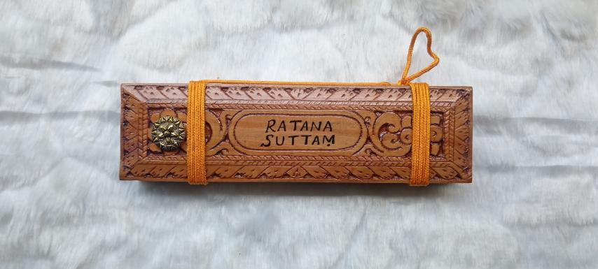
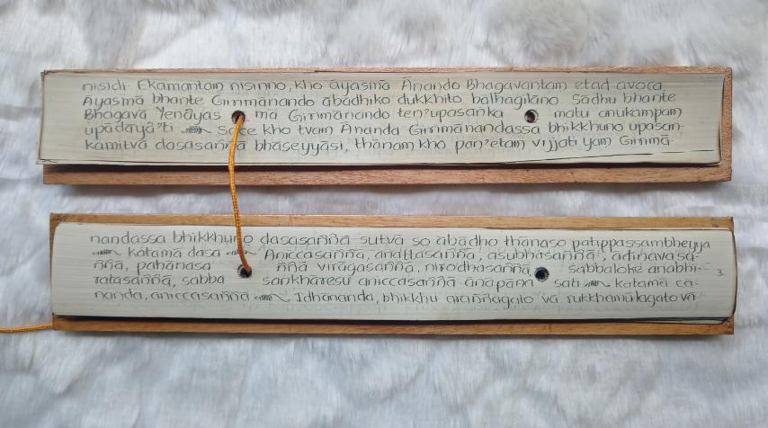
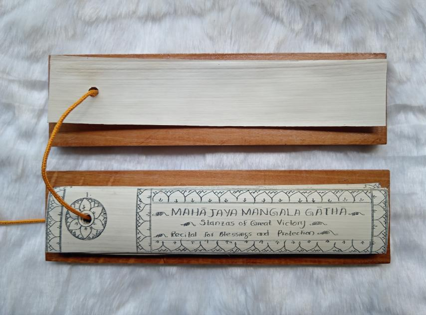

Made leaf by leaf
Books shaped by
text, hand and time.
Each book begins with a chosen text and becomes a singular object through its script, length, binding and protective cover.
The books
A growing record
of finished work.
This gallery brings together books completed in Sahampathi’s Matale workshop—from shorter protective suttas to the many leaves of the Dhammapada. More photographs can be added here as new works are completed.

A living collection
Finished books in different sizes, scripts and bindings, gathered together in the light.

The Dhammapada
A substantial commission of many inscribed leaves, held between carved wooden covers.

Protective texts
A collection including the Dhammacakka, Girimānanda, Ratana and Karaṇīyametta Suttas, shown with wood and silver covers.

Lines of Pāli
Roman-script verses revealed by dark pigment settling into each hand-cut incision.

Gathered by hand
Prepared leaves aligned into a single volume before the covers and final binding are completed.

A set of protective texts
Seven finished books with individually carved wooden covers, shown together before they left the workshop.

Dhammapada cover
The completed volume closed between carved covers and secured with white cord.

Mahā Jaya Maṅgala Gāthā
A shorter protective text finished with a hand-carved cover and saffron-coloured binding cord.

Karaṇīyametta Sutta
The discourse on loving-kindness presented as a compact, hand-bound Ola leaf book.

Ratana Sutta, opened
The title leaf framed with an incised lotus border beneath the protective wooden cover.

Jaya Paritta
A finished protective text held between carved wooden covers and tied by hand.

Mahāmaṅgala Sutta
The Discourse on the Highest Blessings in a compact Roman-script edition.

Ratana Sutta
A completed cover view showing the carved border, central title and floral fastener.

Roman-script detail
Two leaves showing the spacing, diacritics and fine rhythm of the hand-inscribed Pāli text.

A decorated title leaf
The Mahā Jaya Maṅgala Gāthā title and English description framed by a hand-incised lotus pattern.
Every commission is different. The text, script, number of leaves and choice of cover are discussed directly with Sahampathi before work begins.